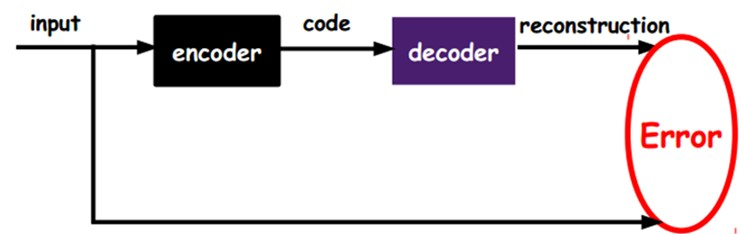
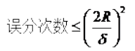
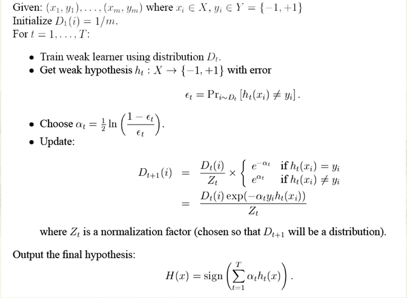

机器学习（Machine Learning）是一门专门研究计算机怎样模拟或实现人类的学习行为，以获取新的知识或技能，重新组织已有的知识结构使之不断改善自身的性能的学科。
为什么会有deep learning？==》目的：特征的学习（多隐层的机器学习模型+海量训练数据 ==》得到更好的特征 ==》最终提升检测的准确性）
手工地选取特征缺点：是一件非常费力、启发式（需要专业知识）的方法，能不能选取好很大程度上靠经验和运气，而且它的调节需要大量的时间。既然手工选取特征不太好，那么能不能自动地学习一些特征呢？
人脑学习机理：从原始信号摄入开始（瞳孔摄入像素 Pixels），接着做初步处理（大脑皮层某些细胞发现边缘和方向），然后抽象（大脑判定，眼前的物体的形状，是圆形的），然后进一步抽象（大脑进一步判定该物体是只气球）。
分层特征抽象的优点：高层的特征是低层特征的组合，从低层到高层的特征表示越来越抽象，越来越能表现语义或者意图。而抽象层面越高，存在的可能猜测就越少，就越利于分类。例如，单词集合和句子的对应是多对一的，句子和语义的对应又是多对一的，语义和意图的对应还是多对一的，这是个层级体系。例子：
特征的重要性：特征是机器学习系统的原材料，对最终模型的影响是毋庸置疑的。如果数据被很好的表达成了特征！！！，通常线性模型就能达到满意的精度。那对于特征，我们需要考虑什么呢？
特征表示的粒度
学习算法在一个什么粒度上的特征表示，才有能发挥作用？就一个图片来说，像素级的特征根本没有价值。例如下面的摩托车，从像素级别，根本得不到任何信息，其无法进行摩托车和非摩托车的区分。而如果特征是一个具有结构性（或者说有含义）的时候，比如是否具有车把手（handle），是否具有车轮（wheel），就很容易把摩托车和非摩托车区分，学习算法才能发挥作用。
如何得到不同粒度的特征表示？
找到make sense的小patch再将其进行combine，就得到了上一层的feature，递归地向上learning feature。
稀疏编码是一个重复迭代的过程，每次迭代分两步：
1）选择一组 S[k]，然后调整 a[k]，使得Sum_k (a[k] * S[k]) 最接近 T。
2）固定住 a[k]，在 400 个碎片中，选择其它更合适的碎片S’[k]，替代原先的 S[k]，使得Sum_k (a[k] * S’[k]) 最接近 T。
什么是deep learning？
深度学习的基本思想：假设我们有一个系统S，它有n层（S1,…Sn），它的输入是I，输出是O，形象地表示为： I =>S1=>S2=>…..=>Sn => O，如果输出O等于输入I，即输入I经过这个系统变化之后，只要使得输入与输出的差别尽可能地小即可。也就是说这一层的输出作为下一层的输入。通过这种方式，就可以实现对输入信息进行分级表达了。
含多隐层的多层感知器就是一种深度学习结构。深度学习通过组合低层特征形成更加抽象的高层表示属性类别或特征，以发现数据的分布式特征表示。
如何学习这N个中间层？
一、浅层学习
含有一层隐层节点的浅层模型，支撑向量机、 Boosting、最大熵方法（如LR，Logistic Regression）等。这些模型的结构基本上可以看成带有一层隐层节点（如SVM、Boosting），或没有隐层节点（如LR）。
二、深度学习
1）多隐层的人工神经网络具有优异的特征学习能力，学习得到的特征对数据有更本质的刻画，从而有利于可视化或分类；
2）深度神经网络在训练上的难度，可以通过“逐层初始化”（layer-wise pre-training）来有效克服，在这篇文章中，逐层初始化是通过无监督学习实现的。
多层的好处是可以用较少的参数表示复杂的函数
深度学习的实质，是通过构建具有很多隐层的机器学习模型和海量的训练数据，来学习更有用的特征，从而最终提升分类或预测的准确性。因此，“深度模型”是手段，“特征学习”是目的。区别于传统的浅层学习，深度学习的不同在于：1）强调了模型结构的深度，通常有5层、6层，甚至10多层的隐层节点；2）明确突出了特征学习的重要性，也就是说，通过逐层特征变换，将样本在原空间的特征表示变换到一个新特征空间，从而使分类或预测更加容易。与人工规则构造特征的方法相比，利用大数据来学习特征，更能够刻画数据的丰富内在信息。
Deep learning与传统的神经网络：
相同：采用了神经网络相似的分层结构，系统由包括输入层、隐层（多层）、输出层组成的多层网络，只有相邻层节点之间有连接，同一层以及跨层节点之间相互无连接，每一层可以看作是一个logistic regression模型
不同：采用了与神经网络很不同的训练机制。传统神经网络中，采用的是back propagation的方式进行，简单来讲就是采用迭代的算法来训练整个网络，随机设定初值，计算当前网络的输出，然后根据当前输出和label之间的差去改变前面各层的参数，直到收敛（整体是一个梯度下降法）。而deep learning整体上是一个layer-wise的训练机制。这样做的原因是因为，如果采用back propagation的机制，对于一个deep network（7层以上），残差传播到最前面的层已经变得太小，出现所谓的gradient diffusion（梯度扩散）。
deep learning训练过程具体如下：
1）使用自下上升非监督学习（就是从底层开始，一层一层的往顶层训练）：
采用无标定数据（有标定数据也可）分层训练各层参数，这一步可以看作是一个无监督训练过程，是和传统神经网络区别最大的部分（这个过程可以看作是feature learning过程）：
具体的，先用无标定数据训练第一层，训练时先学习第一层的参数（这一层可以看作是得到一个使得输出和输入差别最小的三层神经网络的隐层），由于模型capacity的限制以及稀疏性约束，使得得到的模型能够学习到数据本身的结构，从而得到比输入更具有表示能力的特征；在学习得到第n-1层后，将n-1层的输出作为第n层的输入，训练第n层，由此分别得到各层的参数；
2）自顶向下的监督学习（就是通过带标签的数据去训练，误差自顶向下传输，对网络进行微调）：
基于第一步得到的各层参数进一步fine-tune整个多层模型的参数，这一步是一个有监督训练过程；第一步类似神经网络的随机初始化初值过程，由于DL的第一步不是随机初始化，而是通过学习输入数据的结构得到的，因而这个初值更接近全局最优，从而能够取得更好的效果；所以deep learning效果好很大程度上归功于第一步的feature learning过程。
深度学习的常用模型？
AutoEncoder自动编码器
是一种尽可能复现输入信号的神经网络。为了实现这种复现，自动编码器就必须捕捉可以代表输入数据的最重要的因素，就像PCA那样，找到可以代表原信息的主要成分。
只有无标签数据，也就是右边的图。那么这个误差怎么得到呢？

通过调整encoder和decoder的参数，使得重构误差最小，这时候我们就得到了输入input信号的第一个表示了，也就是编码code了。因为是无标签数据，所以误差的来源就是直接重构后与原输入相比得到。
此时，根据自动编码器得到了 更好的特征，
下一步，为了它有分类能力，在AutoEncoder的最顶的编码层添加一个分类器（例如罗杰斯特回归、SVM等），然后通过标准的多层神经网络的监督训练方法（梯度下降法）去训练。
自动编码器变体：
稀疏自动编码器：因为稀疏的表达往往比其他的表达要有效。
如果我们把输出必须和输入相等的限制放松，同时利用线性代数中基的概念，即O = a1*Φ1 + a2*Φ2+….+ an*Φn， Φi是基，ai是系数，我们可以得到这样一个优化问题：
Min |I – O|，其中I表示输入，O表示输出。
通过求解这个最优化式子，我们可以求得系数ai和基Φi，这些系数和基就是输入的另外一种近似表达。

因此，它们可以用来表达输入I，这个过程也是自动学习得到的。如果我们在上述式子上加上L1的Regularity限制，得到：
Min |I – O| + u*(|a1| + |a2| + … + |an |)
这种方法被称为Sparse Coding
1）Training阶段：给定一系列的样本图片[x1, x 2, …]，我们需要学习得到一组基[Φ1, Φ2, …]，也就是字典。
稀疏编码是k-means算法的变体，其训练过程也差不多（EM算法的思想：如果要优化的目标函数包含两个变量，如L(W, B)，那么我们可以先固定W，调整B使得L最小，然后再固定B，调整W使L最小，这样迭代交替，不断将L推向最小值。EM算法可以见我的博客：“从最大似然到EM算法浅解”）。
训练过程就是一个重复迭代的过程，按上面所说，我们交替的更改a和Φ使得下面这个目标函数最小。

每次迭代分两步：
a）固定字典Φ[k]，然后调整a[k]，使得上式，即目标函数最小（即解LASSO问题）。
b）然后固定住a [k]，调整Φ [k]，使得上式，即目标函数最小（即解凸QP问题）。
不断迭代，直至收敛。这样就可以得到一组可以良好表示这一系列x的基，也就是字典。
2）Coding阶段：给定一个新的图片x，由上面得到的字典，通过解一个LASSO问题得到稀疏向量a。这个稀疏向量就是这个输入向量x的一个稀疏表达了。

例如：

降维的必要性
1.多重共线性--预测变量之间相互关联。多重共线性会导致解空间的不稳定，从而可能导致结果的不连贯。
2.高维空间本身具有稀疏性。一维正态分布有68%的值落于正负标准差之间，而在十维空间上只有0.02%。
3.过多的变量会妨碍查找规律的建立。
4.仅在变量层面上分析可能会忽略变量之间的潜在联系。例如几个预测变量可能落入仅反映数据某一方面特征的一个组内。
降维的目的：
1.减少预测变量的个数
2.确保这些变量是相互独立的
3.提供一个框架来解释结果
降维的方法有：主成分分析、因子分析、用户自定义复合等。
PCA（Principal Component Analysis）不仅仅是对高维数据进行降维，更重要的是经过降维去除了噪声，发现了数据中的模式。
PCA把原先的n个特征用数目更少的m个特征取代，新特征是旧特征的线性组合，这些线性组合最大化样本方差，尽量使新的m个特征互不相关。从旧特征到新特征的映射捕获数据中的固有变异性。
总结
深度学习算法自动的提取分类需要的低层次或者高层次特征。高层次特征，一是指该特征可以分级（层次）地依赖其他特征，例如：对于机器视觉，深度学习算法从原始图像去学习得到它的一个低层次表达，例如边缘检测器，小波滤波器等，然后在这些低层次表达的基础上再建立表达，例如这些低层次表达的线性或者非线性组合，然后重复这个过程，最后得到一个高层次的表达。
Deep learning能够得到更好地表示数据的feature
opencv开源项目
1 一个实现了图像处理和计算机视觉方面很多通用的算法。
2 基础类：点、矩形、矩阵、向量的封装。
Mat：
3 基本的矩阵操作：求和、均值、方差、平方
4 图像处理：滤波：高斯滤波、线性滤波、拉普拉斯滤波
颜色空间、直方图
5 输入输出为XML、用于可视化的GUI 、
6 对象检测：HOG特征、LBP特征、级联分类器。
行人识别
一 HOG+SVM模型（1)HOG特征
1 定义：
通过计算和统计图像局部区域的梯度方向直方图来构成特征
2 思想：
在一副图像中，局部目标的表象和形状能够被梯度（变化程度）或边缘的方向的密度分布很好的描述。
3 计算过程：
1）计算图像中每个像素的梯度，包括大小和方向，一般都用sobel算子进行计算；
2）根据cell的大小，进行梯度方向直方图的构建，一般将角度分为9个Bin，利用二线性差值法根据当前方向角与两个Bin中心的角度映射幅值；==》目的：对图像局部梯度信息进行统计和编码
3）根据多个cell构建Block，将cell分割成四块，对Block进行归一化；==》为了特征具有更好的鲁棒性，适应局部的细微变化，由于局部光照的变化以及前景-背景对比度的变化，使得梯度强度的变化范围非常大。这就需要对梯度强度做归一化。归一化能够进一步地对光照、阴影和边缘进行压缩。
作者采用了四中不同的方法对区间进行归一化，并对结果进行了比较。引入v表示一个还没有被归一 化的向量，它包含了给定区间（block）的所有直方图信息。| | vk | |表示v的k阶范数，这里的k去1、2。用e表示一个很小的常数。这时，归一化因子可以表示如下：
L2-norm：
L1-norm：
L1-sqrt：
L2-Hys：它可以通过先进行L2-norm，对结果进行截短（clipping）（即值被限制为v - 0.2v之间），然后再重新归一化得到。
作者发现：采用L2- Hys，L2-norm 和 L1-sqrt方式所取得的效果是一样的，L1-norm稍微表现出一点点不可靠性。但是对于没有被归一化的数据来说，这四种方法都表现出来显着的改进。
4）集合所有Block的HOG描述符形成特征向量。
4优缺点：
优点
1）HOG是在图像的局部方格单元上操作，它对图像几何的形变，光照的微弱变化保持较好的不变性，这两种形变只会出现在更大的空间领域上。
2）只要行人大体上能够保持直立的姿势，可以容许行人一些细微的肢体动作，这个是因为其在粗的空域抽样（block组织）、精细的方向抽样（cell组织），以及局部的归一化操作。
3）HOG表示的是边缘（梯度）的结构特征，因此可以描述局部的形状信息
4）位置和方向空间的量化，一定程度上可以抑制平移和旋转带来的影响。
5）采用在局部区域归一化直方图，可以部分抵消光照变化带来的影响。
6）由于这种分块分单元的处理方法 ，使得图像局部像素点之间的关系可以很好的得到表征。
缺点
1）描述子生成过程冗长，维度高，导致速度慢，实时性差。
2）很难处理遮挡问题。
3）由于梯度的性质，该描述子对噪声相当敏感。
（2）SVM
SVM理论部分
VC维：可以简单的理解为问题的复杂度，是对函数类的度量。
风险：假设与问题真实解之间的误差。
经验风险：分类器在样本数据上的分类结果与真实的区别。
一致：经验风险确实能够逼近真实风险。
真实风险：由两部分组成：经验风险、置信风险。
置信风险：多大程度上我们可以信任分类器在给未知文本上分类的结果。与样本数量和VC维大小有关。
结构风险最小化：求经验风险与置信风险的和最小化。
非线性：样本数据不可分情况。SVM通过松弛变量和核函数技术。
超平面：其实就是一种线性函数。一个实值函数（函数的值是连续的实数）
几何间隔：点到超平面的欧氏距离，再用||w||归一化 {几何间隔=|g(x)|*1/||w||}。几何间隔与样本的误分次数间存在关系。可以决定误分次数的上界。
最小化||w||：因为它与几何间隔成反比。固定几何间隔1（硬间隔），寻找最小的 min ||w||。（优化问题 或 规划）
约束条件：样本点必须落在超平面的一侧。除了支持向量的点，集合中其它的点的几何间隔都不会小于1。
二次规划：所有的约束条件都是关于自变量的线性函数。（SVM是一个凸二次规划问题：有解，可解）
带等式约束的优化问题：添加拉格朗日乘子==》构造拉格朗日函数==》转化为无约束问题。
样本确定w:w = a1*y1*x1 + a2*y2*x2 + ...an*yn*xn。（ai为拉格朗日乘子，yi为类别。ai不为0的样本唯一确定分类函数，也就是 支持向量）
核函数：输入两个低维空间的向量，算出高维空间的内积值。不用找低维到高维的映射关系。（解决线性不可分问题使接近线性可分状态）
径向基核函数：
分类器：由训练得到的ai 和 选定的核函数 的组合。
松弛变量（损失函数）：没离群的点松弛变量为0。表示样本点到底离群有多远。（处理少数“冥顽不化”的离群点）
惩罚因子C：多重视利群点带来的损失。C不是一个变量，是一个参数寻优的过程，固定一次，训练一次，若比原来的C好，则更新C。可以对不同的样本集选不同的C。
分类函数===》判断解优劣的标准（优化目标）===》目标函数 min 1/2*||w||的平方 + C*累加的损失函数
要学会如何使用libsvm以及一些参数的调节经验，另外需要理清楚svm算法的一些思路：
1. svm中的最优分类面是对所有样本的几何约束最大化（为什么要选择最大间隔分类器，请从数学角度上说明？网易深度学习岗位面试过程中有被问到。答案就是几何间隔与样本的误分次数间存在关系： ，其中的分母就是样本到分类间隔距离，分子中的R是所有样本中的最长向量值），即：

经过一系列推导可得为优化下面原始目标：

2. 下面来看看拉格朗日理论：

可以将1中的优化目标转换为拉格朗日的形式（通过各种对偶优化，KKD条件），最后目标函数为：

我们只需要最小化上述目标函数，其中的α为原始优化问题中的不等式约束拉格朗日系数。
3. 对2中最后的式子分别w和b求导可得：


由上面第1式子可以知道，如果我们优化出了α，则直接可以求出w了，即模型的参数搞定。而上面第2个式子可以作为后续优化的一个约束条件。
4. 对2中最后一个目标函数用对偶优化理论可以转换为优化下面的目标函数：

而这个函数可以用常用的优化方法求得α，进而求得w和b。
5. 按照道理，svm简单理论应该到此结束。不过还是要补充一点，即在预测时有：

那个尖括号我们可以用核函数代替，这也是svm经常和核函数扯在一起的原因。
6. 最后是关于松弛变量的引入，因此原始的目标优化公式为：

此时对应的对偶优化公式为：

与前面的相比只是α多了个上界。
SVM算法优点：
可用于线性/非线性分类，也可以用于回归；
低泛化误差；
容易解释；
计算复杂度较低；
适合文本分类，数据本身的维度很高，但是SVM产生的分类器很简洁。
缺点：
对参数和核函数的选择比较敏感；
原始的SVM只比较擅长处理二分类问题；
SVM训练，参数
二 积分通道特征+adaboost模型
（1）积分通道特征
（2）adaboost模型
主要思想：训练多个弱分类器，每一次训练后更新样本权重，并得到该弱分类器权值。
adaboost训练流程：
初始1.获得一组样本(X)和它的分类(Y)和一个弱分类器(weaklearn).2.赋予平均的权值分布D(i)进入循环:T次
1. 赋予弱分类器权值D(i),使用弱分类器获得样本(X)到分类(Y)上的一个映射.(就是把某个X归到某个Y类中去)
2. 计算这个映射的误差e.e=各个归类错误的样本权值之和.如果e>1/2那么弱分类器训练失败,挑出循环,在二分类情况下
一定能够找到一个阈值使分类结果大于或等于1/2
训练结束(这在二值检测中是不会发生的,而多值的情况就要看分类器够不够强健了)
3. 设B = e / ( 1 - e ).用于调整权值.因为e<1/2.因此0<B<1如下图

4. 如果某样本分类正确,该样本的权值就乘以B让权值变小;如果分类错误,就让该样本的权值乘以1/B或者不变,
这样就让分类正确的样本权值降低,分类错误的样本权值升高,加强了对较难分类样本的分类能力
5. 权值均衡化====>使样本的空间分布是可以用连续随机变量表示的，即分布可用概率密度函数表示，而不是离散的数值
循环结束
3. 最终的分类器是,当一个X进入时,遍历所有Y（二分类的话，只有两种情况）,寻找使(h(x)=y的情况下,log(1/B)之和)最大者即是输出分类y
其中 0< B <1,因为e越小，该分类器分类错误率越小，此时B作为该分布下分类函数的权值也越小，最后log(1/B)就越大，所以我们只要找出h(x)=y的情况下,log(1/B)之和)最大者即是输出分类y。当y只有{1,-1}两类时，只要计算，假设h(x)=1 和 h(x) = -1哪个使log(1/B)之和大。
adaboost算法的整体流程图：（
 与上面的B定义想反但目的都是相同的
与上面的B定义想反但目的都是相同的）

其中：

为弱分类器的可信度权值，
要点总结：
1）每次迭代改变的是样本的分布，而不是重复采样（re weight)
2）样本分布的改变取决于样本是否被正确分类
总是分类正确的样本权值低
总是分类错误的样本权值高（通常是边界附近的样本）
3）最终的结果是弱分类器的加权组合 ，权值表示该弱分类器的性能
Boosting算法的优点：
低泛化误差；
容易实现，分类准确率较高，没有太多参数可以调；
缺点：
对outlier比较敏感；
AdaBoost把多个不同的决策树用一种非随机的方式组合起来，表现出惊人的性能！第一，把决策树的准确率大大提高，可以与SVM媲美。第二，速度快，且基本不用调参数。第三，几乎不Overfitting。
（3）决策树
两个算法：
1、ID3算法：（选择一个分类效果最好的属性对样本集分类，然后递归的在子样本集上寻找最佳属性进行分类）
ID3(Examples,
Target_attribute, Attributes)
输入：
Examples即训练样例集。Target_attribute是这棵树要预测的目标属性。Attributes是除目标属性外供学习到得决策树测试的属性列表。
输出：
返回一棵能正确分类给定Examples的决策树
伪代码表示：
{
创建树的Root节点
if(Examples 都为正) // 决策树增长终止条件
返回label = + 的单节点树Root
if(Examples 都为反) // 决策树增长终止条件
返回label = - 的单节点树Root
if(Attributes为空) // 决策树增长终止条件
那么返回单节点树Root, label=Examples中最普遍的Target_attributes值
A <- Attributes中分类Examples能力最好的属性
Root的决策属性 <- A
foreach (a in A) // a为属性A的每个可能取值a
{
在Root下加一个新的分支对应测试A = a
令Examples(a)为Examples中满足A属性值为a的子集
在这个新分支下加一个子树ID3(Examples(a), Target_attribute, Attributes - {A})
}
返回Root
}
算法就是
不断选取某个属性对样例集划分直到决策树增长终止条件满足为止。终止条件为：
1. 节点是一个纯节点，即从某一分支到达该节点上所有的样例（这些样例满足分支上的属性测试的值）属于同一个分类。
2. 所有属性都已经被作为测试属性使用过了。
总之，上面的算法就是一种自顶向下增长树的贪婪算法，在每个节点
选取最好地划分样例的属性。继续这个过程直到这棵树完美分类训练样例，或所有的属性都已被使用过。
2、如何选择在树的每个节点要测试的属性？（也就是一个属性对样本集分类表现效果好，这个好是用什么表现的）
这里顶一个统计属性，称为信息增益，它用来来衡量给定的属性区分训练样例的能力。
如果训练样例集被某个属性A划分，得到的所有子样例集（每个子样例集中的子样例满足A的某个取值a）如果都是“纯净”的，也就是说
各个子样例集中的子样例（根据目标属性的取值）都属于同一个分类，那么这个属性A绝对是对能够最好的区分样例的属性（因为只要用这个属性对样例测试，那么就可以得到分类的结果）。也就是说，根据某个属性对样例集进行划分后，得到的子样例集越”纯净“，那么这个属性对样例集的区分能力越强。
上面一段话中第二个“纯净”是一种程度的描述，把它称为
样例集的纯度。这里把比较两个属性对样例集的区分能力转化为比较使用两个属性对样例集划分后得到的子样例的纯度。
3、如何刻画样例集的纯度呢？（这个好 对应于数学定义是怎么表现的）
这里引入信息论中广泛使用的一个度量标准，称为熵（entropy）。给定样例集S，目标属性有c个不同的值，那么S相对于这c个分类的熵定义为：

在熵的计算中，我们定义0log0为0。
上式中,pi是S中属于类别i的比例。举一个例子：假设S是一个关于某布尔概念（目标属性的取值有2个，“+”和“-”表示正样本和负样本）的有14个样例的集合，它包括9个正例和5个反例（我们采用记号[9+，5-]来概括这样的数据样例）。那么S相对于这个布尔分类的熵为：
Entropy([9+, 5]) = –(9/14)log(9/14) – (5/14)log(5/14) = 0.94
注意
，如果S的所有成员属于同一类，那么S的熵为0。如果S中的正反样例的数量相等时，熵为1。下面的图刻画了布尔分类的熵函数随着p+(正样例占总样例的比例)从0到1变化的曲线

从上面的图可知道也就是说样例集越“纯”的时候（对应途中横轴两边的情况），熵越小。这个结论可以由只有两个分类的情况推广到有多个分类的情况。
(信息论中的熵可以解释为用二进制位0和1对某个信息（如字串）进行编码所需的二进制位的长度，样例集越纯的时候，其中包含的信息越少，因此要编码样例集的目标值的时候所需的二进制位越少，熵就越小。对于熵的更详细解释会在后面讲到贝叶斯学习时给出)
有了这个结论之后，我们就可以衡量属性对于样例的区分能力了。用某个属性划分样例集后，每个样例子集越“纯净”，那么该属性对于样例的区分能力就越高，这样每个子集的熵就越小，这些子集组成的整个样例集的期望熵也就越小，也就是
期望熵相对于原样例集（在未用该属性划分样例前）的熵降低地越多。
这个熵降低的大小就称为信息增益。
4、求出信息增益？首先求出样例集S在划分前的熵Entropy(S)；
然后，样例集S被某个属性A划分为多个子集，求出每个子集S(a)的熵Entropy(S(a))，并求出样例集S被属性A划分后熵的期望∑|S(a)|/|S|*Entropy(S(a))；
最后用Entropy(S) - ∑|S(a)|/|S|*Entropy(S(a))得到由于使用这个属性划分样例导致的期望熵降低，这个就是一个属性A相对于集合S的信息增益Gain(S,A)。下面给出精确定义：
注意，等式右边第二项描述的期望熵就是每个子集的熵的加权和，权值为属于S(a)的样例占原始样例S的比例。再次强调，信息增益Gain(S,A)是由于知道属性A而导致的期望熵的减少。换句话讲，就是给定属性A，得到的关于目标函数（如何分类样例）的信息量，或者说是知道属性A的值后对S的任意一个成员的目标值进行编码时，可以节省的二进制位数。
1、 C4.5算法
C4.5决策树在ID3决策树的基础之上稍作改进，C4.5克服了ID3的2个缺点：
1.用信息增益选择属性时偏向于选择分枝比较多的属性值，即取值多的属性
2.不能处理连贯属性
Outlook和Windy取离散值，Temperature和Humidity则取连续值。
对于离散属性V，ID3中计算的是“信息增益”，C4.5中则计算“信息增益率”:

==》信息增益
信息增益率：

其中

Spit用划分的集合大小比率，代替标记类别大小的比率来计算原始数据的熵。如果划分为两个相同大小的集合，Split(S,A)=-[0.5log(0.5)+0.5log(0.5)]=log(2).三个相同大小集合，则为log(3).N个集合则为log(N).于是集合越多，分母越大，平衡增益里倾向集合多的缺点。
2、C4.5是如何处理连续属性的呢？
实际上它先把连续属性转换为离散属性再进行处理。虽然本质上属性的取值是连续的，但对于有限的采样数据它是离散的，如果有N条样本，那么我们有N-1种离散化的方法：<=vj的分到左子树，>vj的分到右子树。计算这N-1种情况下最大的信息增益率。
在离散属性上只需要计算1次信息增益率，而在连续属性上却需要计算N-1次，计算量是相当大的。有办法可以减少计算量。对于连续属性先进行排序，只有在决策属性发生改变的地方才需要切开。比如对Temperature进行排序

本来有13种离散化的情况，现在只需计算7种。如果利用增益率来选择连续值属性的分界点，会导致一些副作用。分界点将样本分成两个部分，这两个部分的样本个数之比也会影响增益率。根据增益率公式，我们可以发现，当分界点能够把样本分成数量相等的两个子集时（我们称此时的分界点为等分分界点），增益率的抑制会被最大化，因此等分分界点被过分抑制了。子集样本个数能够影响分界点，显然不合理。因此在决定分界点是还是采用增益这个指标，而选择属性的时候才使用增益率这个指标。这个改进能够很好得抑制连续值属性的倾向。当然还有其它方法也可以抑制这种倾向，比如MDL。
决策树的优点：
计算量简单，可解释性强，比较适合处理有缺失属性值的样本，能够处理不相关的特征；
缺点：
容易过拟合（后续出现了随机森林，减小了过拟合现象）；
三 DPM
四 其它重要模型
五 其它特征及比较、模型的比较
（1）HOG与SIFT的主要区别如下：
1 SIFT是基于关键点特征向量的描述。
2 HOG是将图像均匀的分成相邻的小块，然后在所有的小块内统计梯度直方图。
3 SIFT需要对图像尺度空间下对像素求极值点，而HOG中不需要。
4 SIFT一般有两大步骤，第一个步骤对图像提取特征点，而HOG不会对图像提取特征点。
（2）LBP特征
纹理：（主观）对图像区域的视觉感受。（客观） 如果把一幅图像看成一个矩阵，或者是一个具有两个自变量的函数，那么任意的一个图像区域都可以被赋予一个属性（一个以该区域内容为自变量的函数），其中有些属性会和该区域的
纹理视觉感受比较吻合。
六 其它
（1）
（2）机器学习相关概念
( 那些面试官往往问的都是一些公司内部业务中的课题，往往要求你不仅要懂得这些算法的理论过程，而且要非常熟悉怎样使用它，什么场合用它，算法的优缺点，以及调参经验等等)
1 朴素贝叶斯：
朴素贝叶斯的优点：
对小规模的数据表现很好，适合多分类任务，适合增量式训练。
缺点：
对输入数据的表达形式很敏感。
（3）最小二乘法